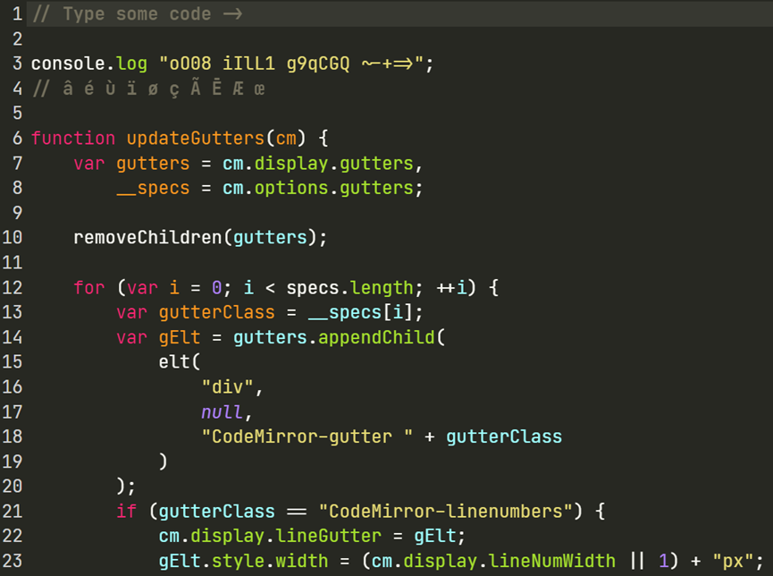

fonts
Table of Contents
Consolas
无衬线字体，这套字型使用了微软的 ClearType 字型平滑技术。
Menlo
Menlo 是 Mac 专属字体。
Hack
基于 DejaVu Sans Mono，为程序员编码设计。
SauceCodePro Nerd Font
Adobe 的思源系列 (Source Code Pro) 的 Nerd 字体。
Fira code
经典的连字字体，Google 设计。

JetBrainsMono
JetBrains公司专门为开发者打造的开源编程字体，在保持字符的宽度标准的基础上最大化了小写字母的高度，使每个字母占据更多的像素。

Operator Mono
Victor Mono
带手写体风格
Go Mono
Google 为 Go 语言设计的字体。
Monaco Mono
iterm2 的默认字体

DejaVu Sans Mono
DejaVu 设计，基于 Bitstream Vera。
SF Mono
San Francisco 字体是苹果公司制造的美式新无衬线字体。
- SF Compact: watchOS 的操作界面字体。与 SF Pro 不同的是，它的字符圆弧更扁平，可以让字母之间有更大的间距，从而使文字在小尺寸下更清晰，这是 Apple Watch 小屏幕所需要的。
- SF Pro: macOS、iOS、iPadOS 和 tvOS 的操作界面字体。
- SF Mono: 等宽变体。它是在 WWDC 2016 上推出的。用于终端、 控制台（仅常规粗细）和 Xcode 应用程序的操作界面字体。
- SF Serif (New York): SF Serif 变体于 2018年 6月 4日 在 WWDC 2018 的主题演讲中展示，当时推出了全新的 Apple Books 应用程序。此变体是 iOS 12 中 Apple Books 独有的，因此无法下载。
- …

Roboto Mono
Roboto 是为 Android 操作系统设计的一个无衬线字体家族。
Droid Sans Mono
是旧版 Android 的默认字体。
Droid 适用于在小屏幕设备上使用，设计者为 Steve Matteson，其命名来自于开放手持设备联盟的智能系统 Android。
Ubuntu Mono
Ubuntu Linux 的默认西文字体。